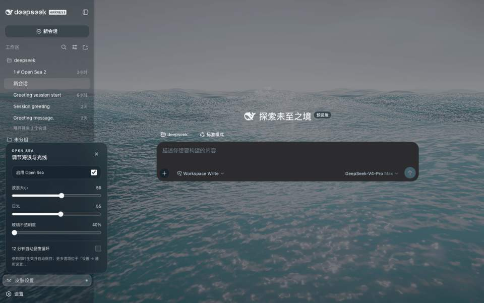
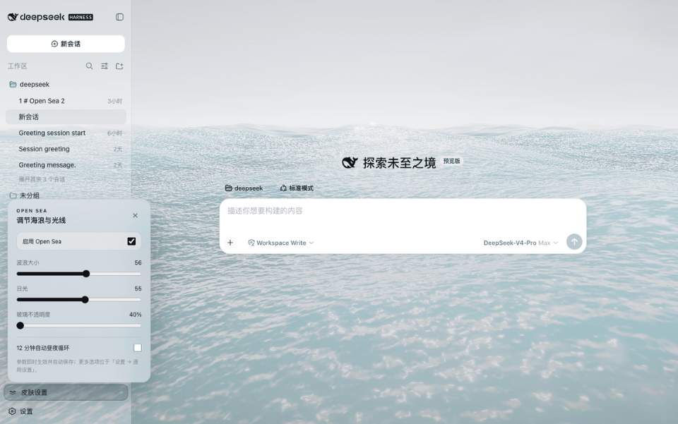
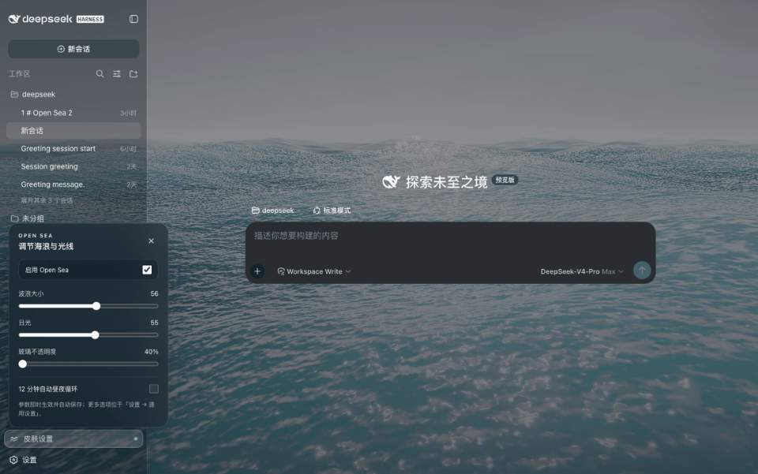
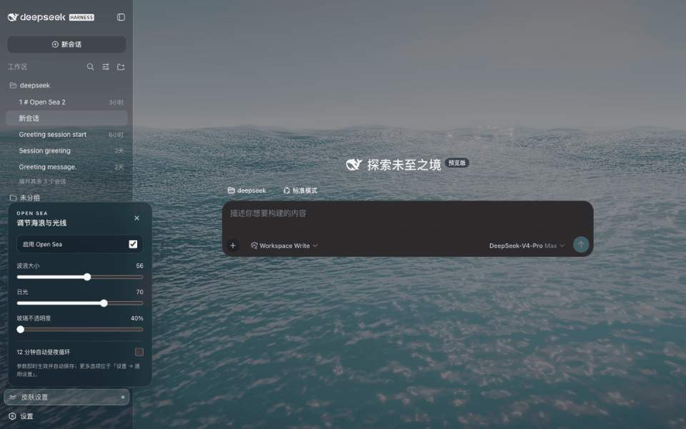

实时，而非循环素材
五组 Gerstner 涌浪、解析法线、FBM 微表面、浪尖泡沫与 Fresnel 天空反射，共享同一组日光参数。
不是壁纸，而是一片会随你调节的 WebGPU 海洋。拖动右侧控制台，亲手改变波浪、日光与界面通透度。
先显示海面预览，实时波浪准备中。可以先调节参数。


它不是覆盖在界面上的视频。海面、天空、太阳和反射由 GPU 实时生成，控制变化会立刻反馈到你的工作空间。
五组 Gerstner 涌浪、解析法线、FBM 微表面、浪尖泡沫与 Fresnel 天空反射，共享同一组日光参数。
左下角快捷控制、设置页原生入口、对话框层级修复，以及只识别真正 Harness 页面的浏览器扩展。
隐藏标签页自动暂停，动态分辨率和低端设备降级，让海洋成为氛围，而不是负担。
three.js、TSL、字体和全部着色器随包本地提供。扩展只请求本机 Harness 地址与设置存储权限。
0 BYTES COLLECTED以下全部在 DeepSeek Harness 中录制，玻璃不透明度统一为 40%。不是概念图，也不是后期合成。


推荐使用 DSH 插件安装；浏览器扩展适合不修改 Harness 的用户，静态安装器用于打包环境。
一行命令安装完整本地运行时与左下角快捷控制。
dsh plugin --profile web add open-sea-skin@1.2.4只为经过识别的 Harness 页面换肤，不会接管新标签页或影响其他本地网站。
下载 v1.2.4 ZIP↓从任意目录运行；自动备份、可重复更新、可安全卸载。
curl -fsSL https://raw.githubusercontent.com/d-dev0101/open-sea-skin/main/install.sh | bashOpen Sea 免费、开源、本地优先。欢迎把它带进你的 Harness，也欢迎一起把这片海做得更好。